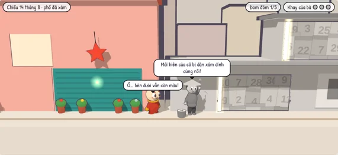
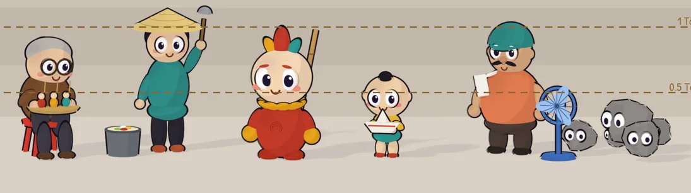

Tò, con tò he bột gạo, bóc lớp xám (những tờ lịch đã bóc rồi bị quên) khỏi một con phố Việt. Bóc tới đâu, màu sắc và tiếng người quay lại tới đó. Đây là bản chơi thử.

Màn 1: Mái hiên
← → đi, ↑ hoặc Space nhảy, giữ E ở mép giấy cong rồi đi lùi để bóc. Trên điện thoại có nút bấm.
Chơi thử